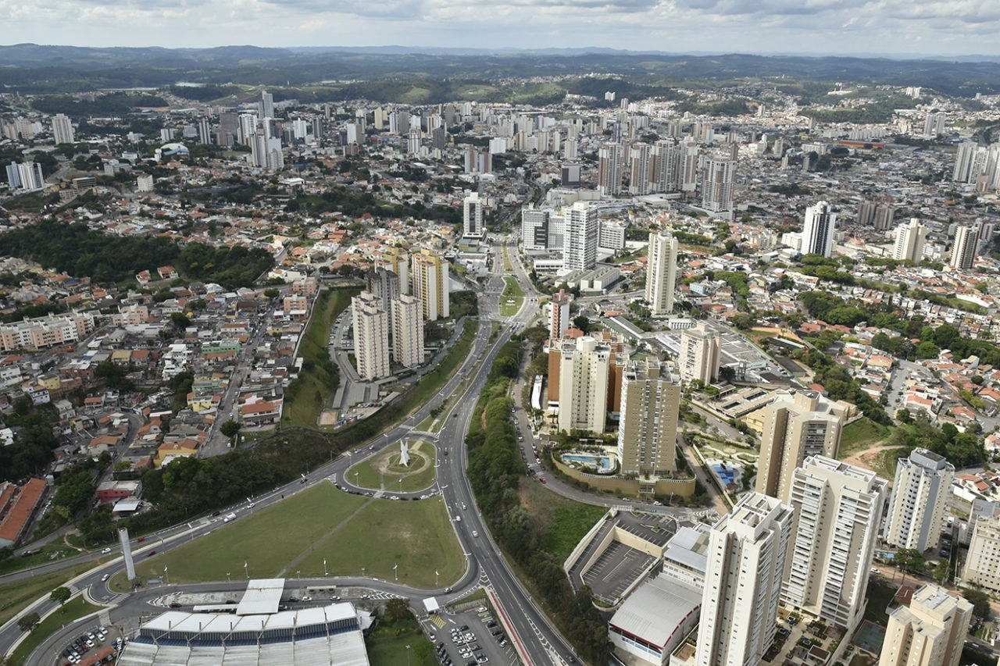

Jundiaí

Jundiaí é uma das cidades mais importantes do interior paulista, localizada a apenas 60 km da capital. Com população de aproximadamente 450 mil habitantes, é reconhecida pela sua economia diversificada, qualidade de vida e preservação ambiental. Sua posição estratégica entre São Paulo e Campinas faz da cidade um polo logístico e industrial de grande relevância.
Historicamente ligada à imigração italiana, Jundiaí ganhou o título de “Terra da Uva”, tradição que se mantém viva através da viticultura, das festas populares e do turismo rural. Além disso, a cidade abriga indústrias de diversos setores, centros comerciais modernos e investimentos em tecnologia e inovação.
Equilibrando urbanização e sustentabilidade, Jundiaí é referência em planejamento urbano e preservação de áreas verdes. Esse equilíbrio torna o município um dos mais atrativos do estado, tanto para negócios quanto para turismo.
Pontos Turísticos
- Parque da Cidade: Grande área de lazer com trilhas, lago e espaços esportivos.
- Museu Histórico e Cultural Solar do Barão: Patrimônio histórico que preserva a memória da cidade.
- Vinícolas: Diversas propriedades abertas para visitas e degustações de vinhos.
Gastronomia
- Comida Italiana: Influência marcante da imigração, com massas e vinhos tradicionais.
- Frango com Polenta: Prato típico da região, servido em restaurantes tradicionais.
- Doces Caseiros: Produzidos nas fazendas e propriedades rurais da cidade.
Economia
- Indústria: Presença de grandes empresas multinacionais e nacionais.
- Logística: Localização estratégica próxima às principais rodovias do estado.
- Agricultura: Forte na produção de uvas e vinhos, além de hortifrutis.
Curiosidades
- Festa da Uva: Tradicional evento que celebra a cultura e a produção local.
- Cidade Verde: Mais de 30% do território é coberto por áreas de preservação ambiental.
- Qualidade de Vida: Frequentemente apontada entre as melhores cidades do Brasil para se viver.